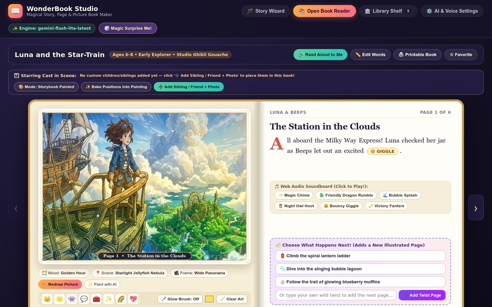
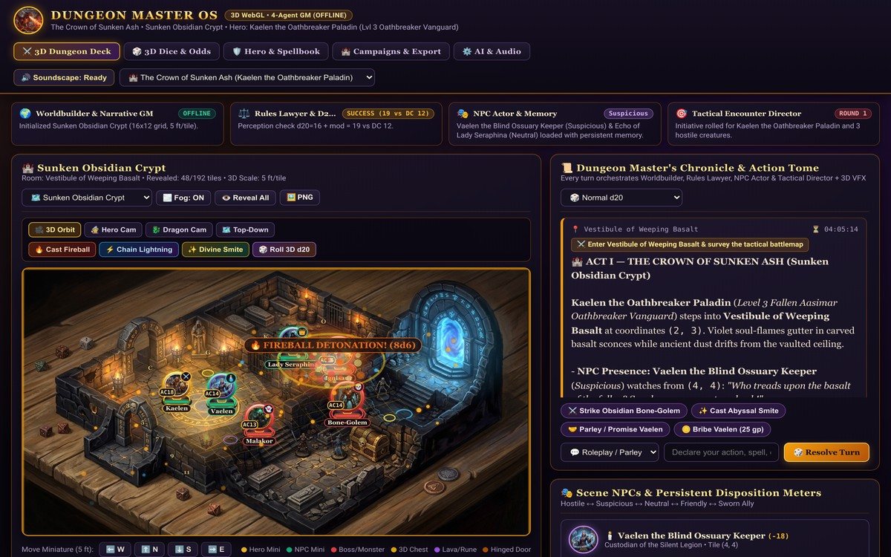
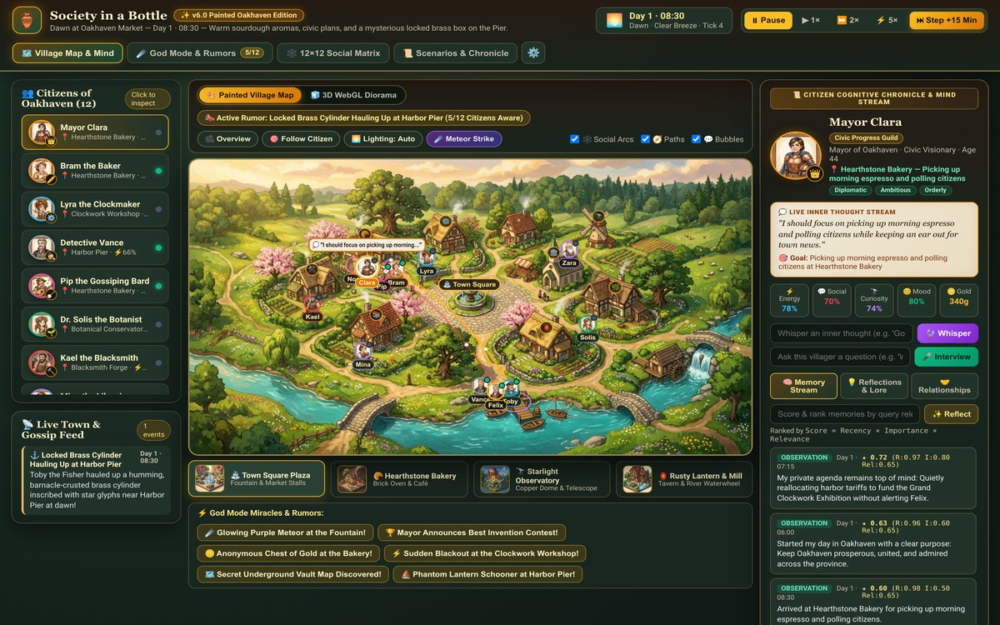
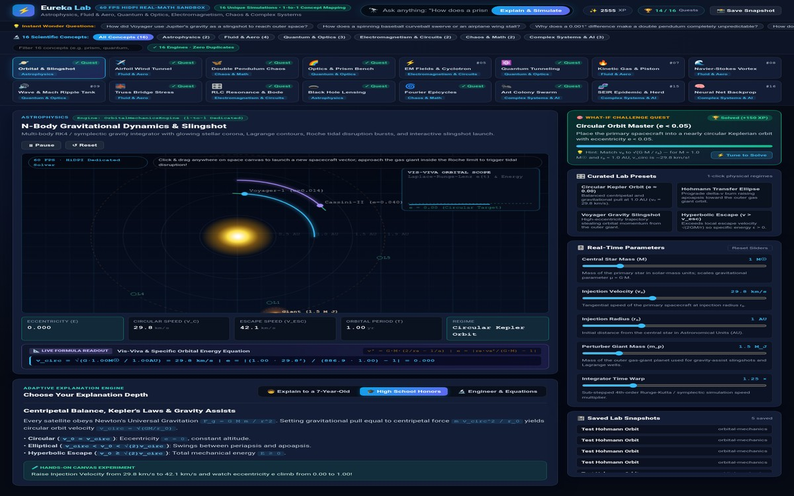
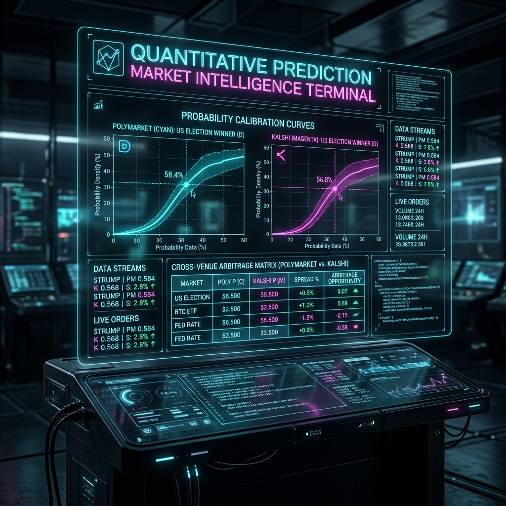
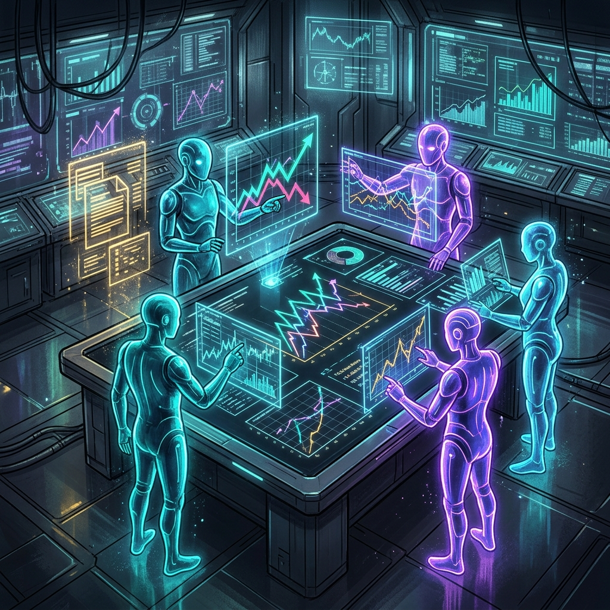
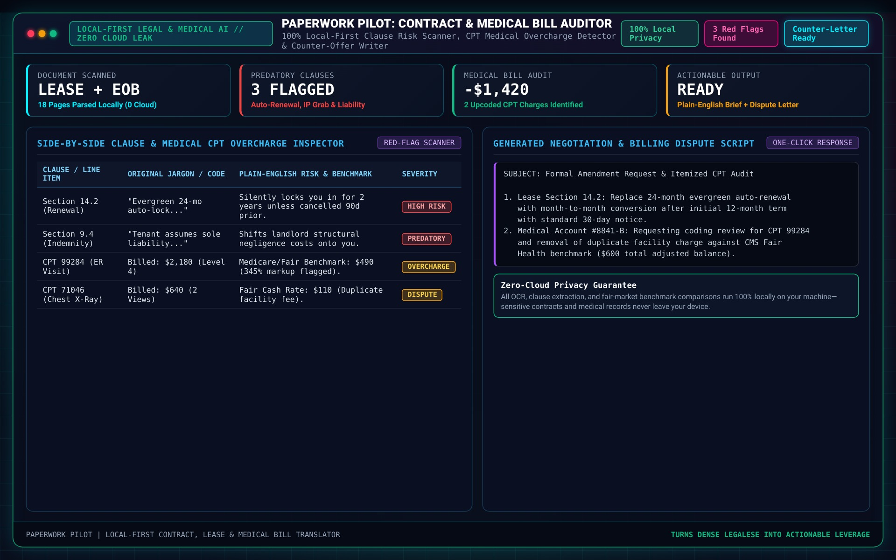
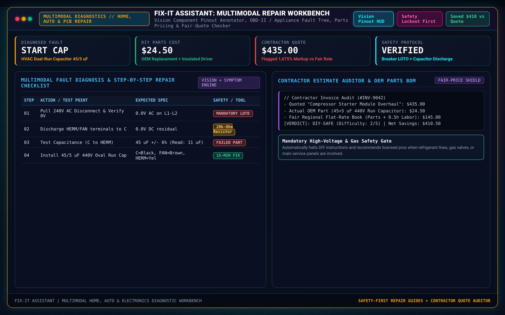

WonderBook Studio: AI Children's Storybook Creator & 3D Illustrated Reader
WonderBook Studio is an interactive AI children's picture book creation studio and 3D illustrated reader. Every storybook, character, and spread is generated on the fly with bespoke AI artwork—combining live Pollinations/Flux neural illustration synthesis, OpenAI/Gemini multimodal pipelines, and a procedural multi-layer Studio Ghibli & glowing watercolor SVG scene compositor so that no two books or spreads ever look the same. Includes an interactive character & art-style wizard, one-click AI Artwork regeneration per page or full book, word-highlighted Web Speech read-aloud narration, and print-ready HTML/PDF storybook export.

PanelForge: Studio Ghibli & AI Comic Book / Manga Studio
PanelForge is an end-to-end AI comic book, graphic novel, and shonen manga creation studio. Writers pitch a concept, select an art style (Studio Ghibli, Shonen Manga, American Superhero, Cyberpunk Noir, Watercolor Fable, or Franco-Belgian Ligne Claire), and PanelForge scripts multi-page issues while synthesizing bespoke panel artwork with dynamic speedlines, cel-shaded characters, atmospheric lighting, and movable SVG speech balloons, thought clouds, and SFX lettering.

Dungeon Master OS: Autonomous AI Game Master & 3D VTT Battlemap
Dungeon Master OS is a full-stack AI-driven Dungeons & Dragons 5e Virtual Tabletop (VTT) and autonomous Game Master. It pairs a narrative AI Dungeon Master and rule-enforcing 5e combat engine with a rich interactive HTML5 Canvas tactical battlemap featuring bevelled flagstone dungeon rooms, flickering radial torch sconces, chasm lava hazards, animated water currents, fog of war, A* pathfinding previews, and metallic/wooden token miniatures with live HP arcs.

Society in a Bottle: Multi-Agent AI Village & Social Simulation
Society in a Bottle is a generative multi-agent social simulation and interactive 2D town sandbox. Eight distinct AI citizens—each with Big-Five personality traits, private goals, gold balances, and episodic/reflected memory streams—live, work, converse, spread rumors, and vote at the Town Hall across 9 interactive buildings (`Oakhearth Tavern`, `Town Hall`, `Blacksmith Forge`, `Grand Library`, `Apothecary`, `Market Square`, `Watchtower`, `Moonlit Docks`, and `Chapel Gardens`) while the user intervenes via a live God-Mode miracle/crisis console.

Pantry Chef: Zero-Default Ingredient-Driven Culinary AI Studio
Pantry Chef is an ingredient-first culinary AI studio built around a strict Zero-Default Ingredient Contract: the application boots with an intentionally empty pantry (`0 ingredients`) and never pre-populates fake groceries or assumes unstated staples. As soon as you add what is actually in your kitchen—via quick autocomplete, bulk text paste, or camera/receipt vision scan—Pantry Chef synthesizes tailored recipes ranked by exact pantry coverage, complete with molecular flavor-pairing explanations, dietary/allergen guardrails, serving-size scaling, and interactive step-by-step cooking timers.

Eureka Lab: Autonomous Scientific Discovery & Physics Workbench
Eureka Lab is an autonomous scientific research and symbolic law-discovery workbench. Researchers select an interactive physical system (`Nonlinear Double Pendulum`, `Lotka-Volterra Predator-Prey`, `SIR Epidemic Dynamics`, `Lorenz Chaotic Attractor`, `Driven Damped Harmonic Oscillator`, or custom CSV experimental telemetry), run noisy numerical simulations, execute Pareto-optimal symbolic regression to rediscover the governing differential equations from raw data, and convene a 5-agent scientific review board to publish a complete LaTeX-formatted research manuscript.

Oracle Desk: Prediction-Market Intelligence Terminal
Oracle Desk is a local-first prediction-market intelligence terminal that pulls live contracts from Polymarket (Gamma/CLOB) and Kalshi (v2 public API), matches equivalent contracts across venues to flag fee-adjusted arbitrage spreads, and computes transparent reference probabilities from FRED macro series, NOAA gridpoints, CoinGecko log-normal drift, and GDELT news tone—backed by a 5-agent Scout -> Evidence -> Quant -> Skeptic -> Journal workflow and a Brier-scored paper portfolio.

Due-Diligence Room: 5-Agent SEC EDGAR & Forensic Memo Studio
Due-Diligence Room convenes five specialized agents over a shared SQLite blackboard to audit any public US company from live SEC EDGAR 10-K/10-Q XBRL facts or user-uploaded PDFs/CSVs. Every financial metric—Beneish M-Score, Altman Z-Score, Piotroski F-Score, Sloan accrual ratio, and cash conversion—is computed in pure Python and tied to an immutable [ev:ID] citation before the Editor agent compiles the final memo.

Paperwork Pilot: Local-First Document, Bill & Contract Translator
Paperwork Pilot lets everyday users drop in confusing leases, medical bills, debt notices, employment contracts, or government forms and immediately get a plain-English translation, a ranked list of traps and deadlines, side-by-side original-vs-plain clause cards, and ready-to-send dispute or negotiation letters—running 100% locally via rules + Ollama or optional cloud LLMs.

Money Mirror: Plain-English Bank Statement & Subscription Auditor
Money Mirror turns raw bank and credit-card CSV exports into an honest, jargon-free financial reflection—automatically detecting recurring subscriptions, silent price creeps, duplicate charges, and category drift while keeping 100% of transaction data on your local machine.

Job-Hunt Copilot: Resume, Job-Fit & Interview Strategy Studio
Job-Hunt Copilot compares your real resume against any job description to surface exact skill matches, honest gaps, ATS keyword coverage, grounded bullet-point rewrites (never inventing fake experience), tailored cover letters, and targeted interview questions—running locally with full application tracking.

Fix-It Assistant: Safety-First Home, Car & Appliance Repair Guide
Fix-It Assistant helps anyone diagnose and fix everyday household, plumbing, electrical, appliance, car, and bike problems in plain 6th-grade English. Hard-coded life-safety rules (gas leaks, carbon monoxide, electrical fire, sagging ceilings) always override the AI, while optional local vision models (Moondream/LLaVA) inspect uploaded photos entirely on your machine.

Run Nexus & Skill Holders Studio
A full-stack personal AI operating system and microservice orchestrator managing 14+ specialized LLM applications, live SSE process telemetry, workspace storage, and Skill Holders Studio for building portable AI Agent Skills and MCP-ready workflows.

SAFER AI Workbench & CMMC Multi-Agent Engine
An enterprise-grade 5-agent sequential LLM compliance engine operating at T=0.0 over a Shared Team Blackboard with strict JSON quality gates across 6 CMMC domains and 17 security practices.

Autonomous UAR, NoPE & ML Peer-Divergence Engine
High-scale Identity Governance & User Access Review platform combining cycle-safe BFS group graph traversal, NoPE Zero-Standing-Privilege checks, and hybrid Neural + Information-Content ML Peer Divergence.

Vulnerability Verifier & Supply-Chain Provenance Suite
Browser-coupled security remediation agent and portable AI Agent Skill auditing P0–P3 vulnerability SLAs, paired with cryptographic SLSA/BCID binary provenance verification and 13-widget executive dashboards.

PROJECT ARGUS: Autonomous 3D OSINT & Custom MCP Server
A custom Model Context Protocol (MCP) server and interactive 3D geospatial command deck exposing 11 real-time OSINT telemetry disciplines as structured JSON-RPC tools for autonomous LLM agents.

Self-Taught AI University
A full-scale autonomous learning platform spanning 285 structured courses and 8,300+ Gemini-synthesized lessons with background prefetching, interactive JS simulations, Python labs, rubric LLM grading, and neural TTS.

Blender Generator: Zero-UI Multi-Agent 3D Studio
A zero-UI multi-agent 3D engineering pipeline where specialized LLM Director and Worker agents write, execute, and self-heal headless Blender 5.0 Python (bpy) scripts for rigged characters, physics, and worlds.

Omni-Producer & Multi-Model Media Generation Studio
Autonomous multi-modal film and media production suite uniting Pydantic-typed Showrunner/Screenwriter agents with Run Nexus Media Generation Studio across Gemini, Imagen/Nanobanana, and Veo 3.1.

Agentic Taskmasters: Feedback Triage & Benefits Auto-Filer
Production agentic workflow duo: an autonomous Feedback Triage Taskmaster (FastAPI, Gemini, Cloud Firestore) and a privacy-first Hybrid Edge/Cloud Benefits Auto-Filer using local Gemma PII scrubbing.

Operation Hades
A cutting-edge cybersecurity tool that integrates Nmap and Metasploit to automate malware deployment and security vulnerability research, leveraging reconnaissance data to execute tailored scripts.

Operation Nemesis
An AI-powered system that combines Metasploit, NSE scripts, and reconnaissance data to dynamically analyze vulnerabilities and deploy customized exploits with precision.

Operation Hermes
A secure Bluetooth communication system built on a Raspberry Pi, designed for portable, encrypted off-grid message exchanges between devices in sensitive field environments.

Operation Apollo
An AI-driven stock advisor system that analyzes real-time market trends, volatility, and financial telemetry to deliver risk-adjusted investment insights.

Operation Icarus
A stealth-focused Nmap overlay with an intuitive web GUI, enabling multi-tab network scans, live streaming output, visual topology heatmaps, and categorized NSE script execution.

Operation Yggdrasil
An AI-powered OSINT platform designed to gather, correlate, and visualize public intelligence across diverse sources using LLM NLP pipelines and interactive Cytoscape relationship graphs.